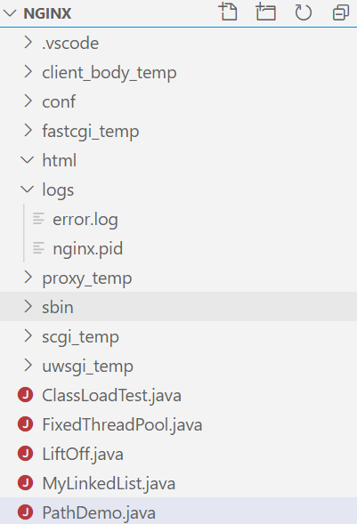

Path通常代表文件系统中的位置，比如C:\user\admin\java或者/Usr/local/java,Path中还有下面这些概念：
NIO.2中的Path是一个抽象构造。你所创建和处理的Path可以不马上绑定到对应的物理位置上。例如在调用Files.createFile(Path target)之前，这个文件是不存在的。如果在Path所对应的文件创建之前，你试图访问这个文件的内容，就会导致IOException。同样，如果你调用Files.readAllBytes(Path target)读取一个并不存在的path，也同样会报IOException异常。简言之，JVM只会把Path绑定到运行时的物理位置上。
类
说明
Path
Path类中的方法可以用来获取路径信息，访问该路径中的元素，将路径转换为其他形式，或提取路径中的一部分，有的方法还可以匹配路径字符串以及移除路径中的冗余项
Paths
工具类，提供返回一个路径的辅助方法，比如get(String path)和get(URI uri)
FileSystem
与文件系统交互的类，无论是默认的文件系统还是通过其他URI获取的可选文件系统
FileSystems
工具类，提供各种方法，比如其中用于返回默认文件系统的FileSystems.getDefault()
Path并不仅限于传统的文件系统，它也能表示zip或jar这样的文件系统。
从Path中获取信息 项目结构图如下

1 2 3 4 5 6 7 8 9 10 11 12 13 import java.nio.file.Path;import java.nio.file.Paths;public class PathDemo public static void main (String[] args) Path listing = Paths.get("E:\\nginx\\logs" ); System.out.println("File Name [" + listing.getFileName()+"]" ); System.out.println("Number of Name Elements in the Path [" + listing.getNameCount()+"]" ); System.out.println("Parent Path [" + listing.getParent()+"]" ); System.out.println("Root of Path [" + listing.getRoot()+"]" ); System.out.println("SubPath from Root [" + listing.subpath(0 , 2 )+"]" ); } }
移除冗余项 去掉路径字符串前的.
1 Path normalizedPath = Paths.get("./nginx" ).normalize();
转换Path 1 2 3 Path prefix = Paths.get("/uat/" ); Path completePath = prefix.resolve("conf/application.properties" ); Path re = prefix.relativize(completePath);
Path与File的相互转换 1 2 3 4 File file = new File("./logs/error.log" ); Path listing = file.toPath(); listing.toAbsolutePath(); file = listing.toFile();
在目录中查找文件 1 2 3 4 5 6 7 8 9 Path dir = Paths.get("./logs/" ); try (DirectoryStream<Path> stream = Files.newDirectoryStream(dir, "*.log" )) { for (Path path : stream) { System.out.println(path.getFileName()); } } catch (Exception e) { System.out.println(e.getMessage()); }
遍历目录树，查找目录下的.exe文件
1 2 3 4 5 6 7 8 9 10 11 12 13 14 15 16 public class Find public static void main(String [] args) throws IOException { Path startingDir = Paths .get("C:\\Program Files\\Java\\jdk1.8.0_231\\bin" ); Files .walkFileTree(startingDir, new FindJavaVistor ()); } private static class FindJavaVistor extends SimpleFileVisitor<Path> @Override public FileVisitResult visitFile(Path file, BasicFileAttributes attrs) throws IOException { if (file.toString().endsWith(".exe" ));{ System .out.println(file.getFileName()); } return FileVisitResult .CONTINUE ; } } }
文件系统I/O
类
说明
Files
复制、移动、删除、或者处理文件的工具类，有你需要的所有方法
WatchService
用来监视文件或目录的核心类，不管它们有没有变化